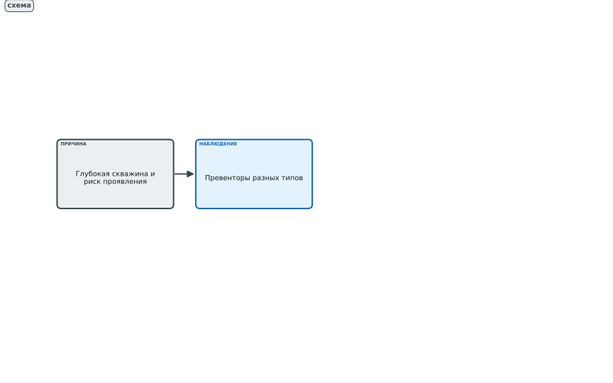
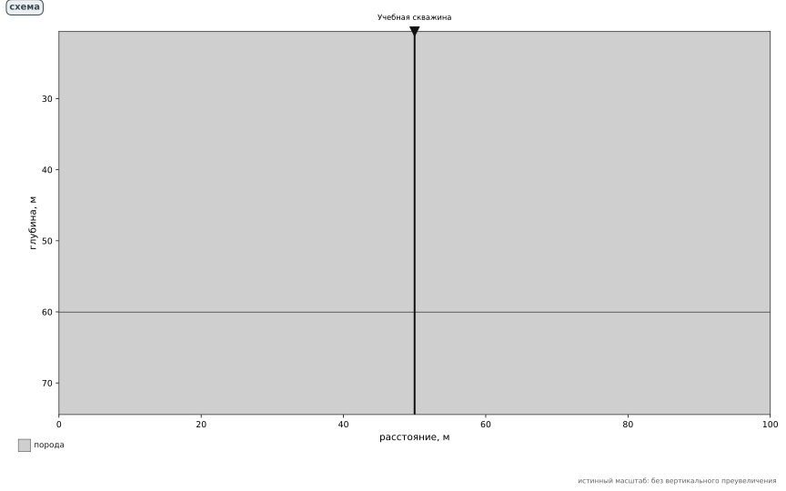
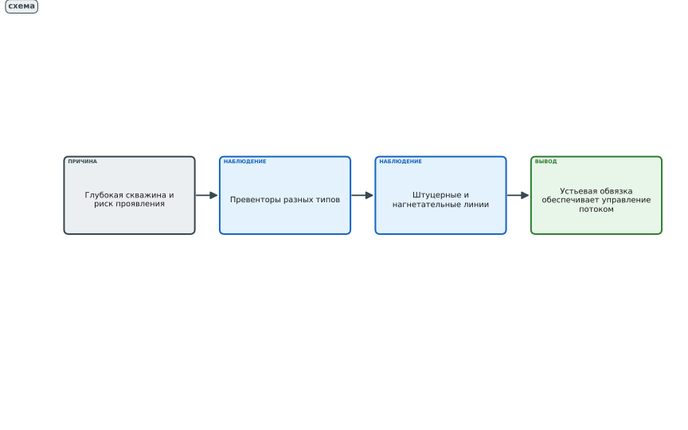

В книге: «Как различать превенторы и линии на устье» стр. 312–313
≈ 6 мин⟳ Интерактивтрудность: пространство + масштаб
Суть
Устье — верхняя часть скважины.
В описанной обвязке превенторы перекрывают ствол, а линии и манифольды позволяют управлять потоком.
Пороговая идея. На схеме отличить уплотняющие элементы от линий управляемого потока. модель
Интерактив: как это происходит



1 / 6
Что именно закрывается у превентора?
Допущения: Условная схема; блоки не задают временной масштаб или размеры оборудования.; Условная геометрия разреза, без реальной литологии и без привязки к месторождению..
Как это работает
Механизм
При опасности проявления в сложных условиях в описанной практике на устье используют несколько превенторов. На схеме показана обвязка глубоких скважин на суше и на стационарных или полупогружных морских платформах. стр. 312
«В зарубежной практике бурения скважин в сложных геологических условиях, когда имеется опасность возникновения нефтегазопроявлений для обеспечения надежности на устье скважин монтируют довольно сложную компоновку наземного оборудования, состоящую из нескольких превенторов.»
«На рис. 4.16 представлена схема обвязки устьевого оборудования, применяемого при вскрытии и испытании пластов в глубоких скважинах, бурящихся как на суше, так и на море со стационарных или с полупогружных платформ.»
Практика
Оборудование предназначено для контроля при высоких пластовых давлениях и ликвидации проявлений. У превенторов есть задача перекрыть скважину. Автор указывает кольцевой, трубные и превентор с глухими плашками. В обвязку входят манифольды, напорная, глушильные и штуцерные линии. Рисунок показывает компоновку устья для вскрытия и испытания пластов. стр. 312–313
«Данная компоновка устьевого оборудования позволяет контролировать бурящуюся скважину при высоких пластовых давлениях и ликвидировать возникающие нефте- и газопроявления (или выбросы).»
«В рассматриваемую компоновку входит следующее оборудование: нагнетательный манифольд 1, штуцерный манифольд 2, кольцевой превентор 3, трубные превенторы 6 и 14, превентор 8 с глухими плашками, напорная линия 12 насосов высокого давления, линия 11 для глушения скважин, дополнительная линия для глушения 13, штуцерная линия 9 к штуцерному манифольду, дополнительная штуцерная линия 15 к штуцерному манифольду, устьевая головка 16.»
«Схема обвязки устьевого оборудования, применяемого при вскрытии и испытании пластов»
схема
Схема: как устроено устье скважины.
Класс B · схема · нарисовано кодом · стр. 312–313
Частая ошибка модель
✗Ошибка: Если закрыли трубные плашки, закрыли и внутренний канал трубы.
✓На самом деле: Плашки уплотняют пространство вокруг тела трубы; внутренний канал перекрывается отдельно.
Что это значит для данных модель
На схеме отличить уплотняющие элементы от линий управляемого потока.
Вход
Текст главы и контекст текущей операции
Выход
Объяснение признака или этапа
Где ломается
Один сигнал не доказывает причину без контекста.
гипотеза Показания сопоставимы только при известном режиме работ.
Где здесь ручной труд специалиста
Входные данные
Текст главы и контекст текущей операции
Ручные шаги
Сверить показания и журнал операции.
Точки суждения
На схеме отличить уплотняющие элементы от линий управляемого потока.
Время
Данные о длительности ручной сверки в главе не приведены.
Типичные ошибки
Один сигнал не доказывает причину без контекста.
Аналогия модель
Проверка контекста события в журнале перед интерпретацией метрики.
Где аналогия перестаёт работать: События в стволе физические, а показания могут запаздывать.
Как это делается сейчас модель
За рабочими решениями обращаются к действующему регламенту и ответственному специалисту; этот узел объясняет учебный пример.
Глубже
Граница ИТ-аналогии модель
События в стволе физические, а показания могут запаздывать.
Рисунки книги к этому шагу по книге
Рис. 4.16. Рис. 4.16. Схема обвязки устьевого оборудования, применяемого при вскрытии и испытании пластов стр. 313(не перерисован — смотрите в книге)
Новые понятия
Устье скважины (wellhead)
Верхняя часть скважины, где размещают оборудование контроля потока. модель
Превентор (blowout preventer)
Устройство устьевого оборудования, предназначенное для герметизации скважины. модель
Трубные плашки (pipe rams)
Уплотняющие элементы превентора для перекрытия кольцевого пространства вокруг трубы. модель
Штуцерный манифольд (choke manifold)
Система линий, арматуры и штуцеров для управления потоком из скважины. модель
Глушение скважины (well kill)
Восстановление контроля над скважиной путем вытеснения притока и создания необходимого давления на забое. модель
Проверь себя
Один ответ
Верный ответ: Для контроля скважины и ликвидации проявления
Все утверждения шага с дословной цитатой автора и страницей книги (по PDF).
При опасности проявления в сложных условиях в описанной практике на устье используют несколько превенторов. наблюдение
«В зарубежной практике бурения скважин в сложных геологических условиях, когда имеется опасность возникновения нефтегазопроявлений для обеспечения надежности на устье скважин монтируют довольно сложную компоновку наземного оборудования, состоящую из нескольких превенторов.»
На схеме показана обвязка глубоких скважин на суше и на стационарных или полупогружных морских платформах. наблюдение
«На рис. 4.16 представлена схема обвязки устьевого оборудования, применяемого при вскрытии и испытании пластов в глубоких скважинах, бурящихся как на суше, так и на море со стационарных или с полупогружных платформ.»
Оборудование предназначено для контроля при высоких пластовых давлениях и ликвидации проявлений. наблюдение
«Данная компоновка устьевого оборудования позволяет контролировать бурящуюся скважину при высоких пластовых давлениях и ликвидировать возникающие нефте- и газопроявления (или выбросы).»
В схеме выделены превенторы, манифольды, напорная линия, линии глушения и штуцерные линии. наблюдение
«В рассматриваемую компоновку входит следующее оборудование: нагнетательный манифольд 1, штуцерный манифольд 2, кольцевой превентор 3, трубные превенторы 6 и 14, превентор 8 с глухими плашками, напорная линия 12 насосов высокого давления, линия 11 для глушения скважин, дополнительная линия для глушения 13, штуцерная линия 9 к штуцерному манифольду, дополнительная штуцерная линия 15 к штуцерному манифольду, устьевая головка 16.»
Рисунок показывает компоновку устья для вскрытия и испытания пластов. наблюдение
«Схема обвязки устьевого оборудования, применяемого при вскрытии и испытании пластов»
Исходный текст урока
Стр. 312 · 4.2.14. ЛИКВИДАЦИЯ НЕФТЕГАЗОПРОЯВЛЕНИЙ ПРИ БУРЕНИИ СКВАЖИН
В зарубежной практике бурения скважин в сложных геологических условиях, когда имеется опасность возникновения нефтегазопроявлений для обеспечения надежности на устье скважин монтируют довольно сложную компоновку наземного оборудования, состоящую из нескольких превенторов.
Стр. 312 · 4.2.14. ЛИКВИДАЦИЯ НЕФТЕГАЗОПРОЯВЛЕНИЙ ПРИ БУРЕНИИ СКВАЖИН
На рис. 4.16 представлена схема обвязки устьевого оборудования, применяемого при вскрытии и испытании пластов в глубоких скважинах, бурящихся как на суше, так и на море со стационарных или с полупогружных платформ.
Стр. 312 · 4.2.14. ЛИКВИДАЦИЯ НЕФТЕГАЗОПРОЯВЛЕНИЙ ПРИ БУРЕНИИ СКВАЖИН
Данная компоновка устьевого оборудования позволяет контролировать бурящуюся скважину при высоких пластовых давлениях и ликвидировать возникающие нефте- и газопроявления (или выбросы). В рассматриваемую компоновку входит следующее оборудование: нагнетательный манифольд 1, штуцерный манифольд 2, кольцевой превентор 3, трубные превенторы 6 и 14, превентор 8 с глухими плашками, напорная линия 12 насосов высокого давления, линия 11 для глушения скважин, дополнительная линия для глушения 13, штуцерная линия 9 к штуцерному манифольду, дополнительная штуцерная линия 15 к штуцерному манифольду, устьевая головка 16.
Стр. 313 · 4.2.14. ЛИКВИДАЦИЯ НЕФТЕГАЗОПРОЯВЛЕНИЙ ПРИ БУРЕНИИ СКВАЖИН
Рис. 4.16. Схема обвязки устьевого оборудования, применяемого при вскрытии и испытании пластов